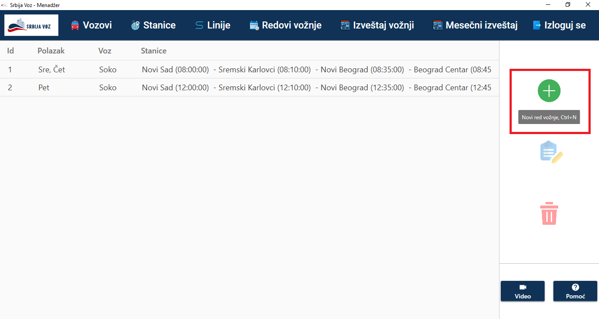
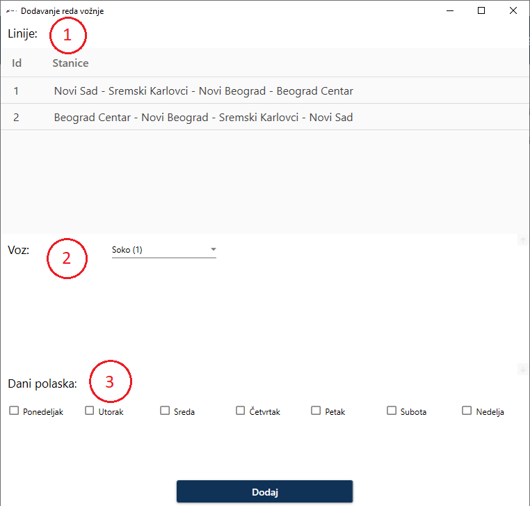
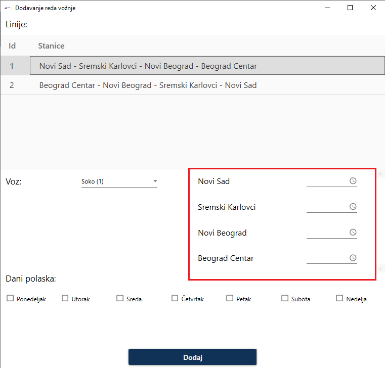
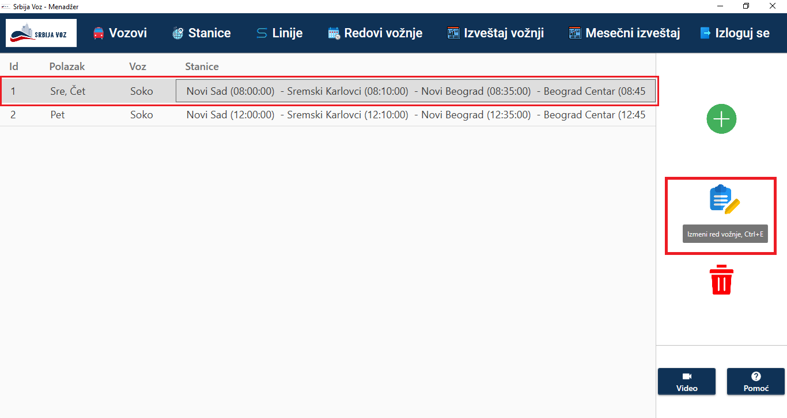
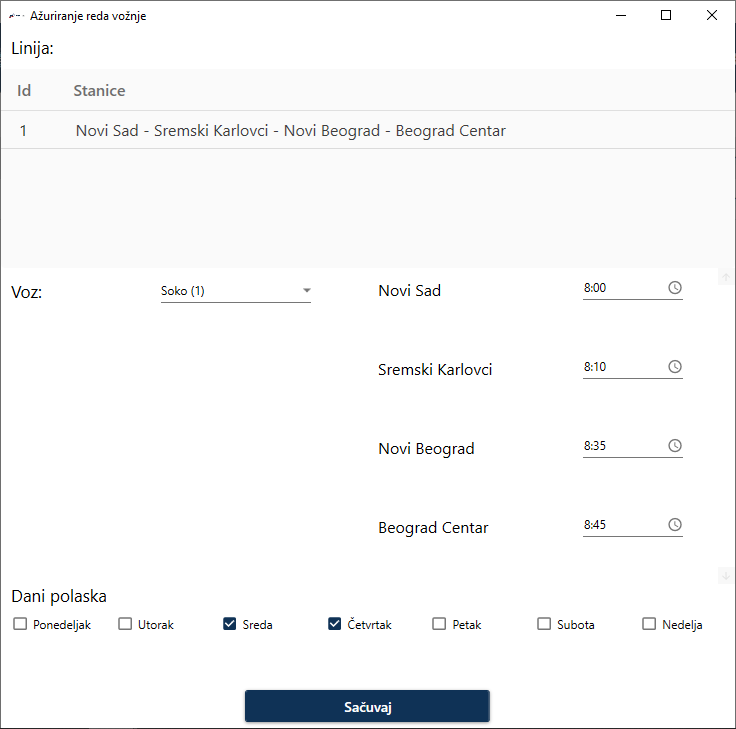
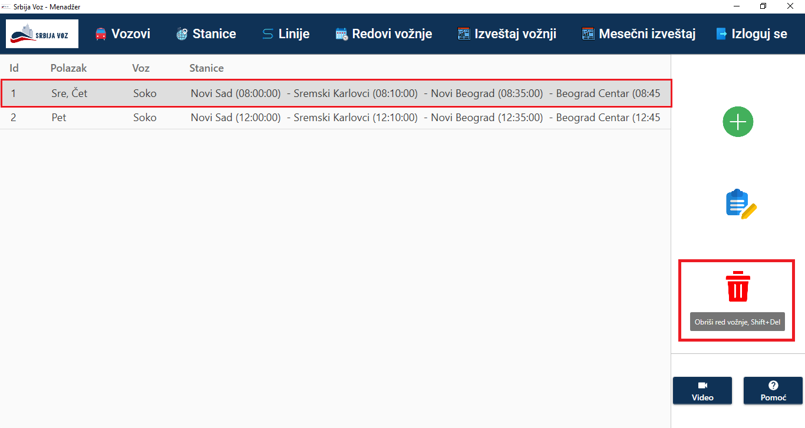
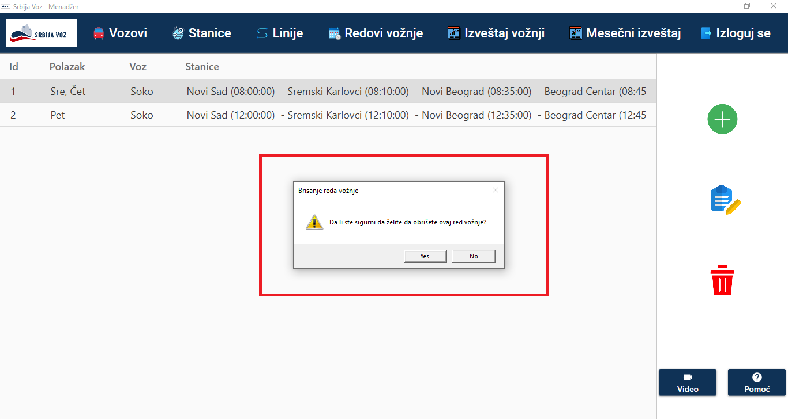

Red vožnje
U ovoj sekciji biće prikazano korišćenje stranice za kreiranje novog reda vožnje
Prvi korak predstavlja odabir opcije "Novi red vožnje" klikom na dugme ili upotrebom određene prečice(Ctrl+N) kao što je zaokruženo na slici ispod.
Nakon toga se otvara prozor za kreiranje novog reda vožnje koji sadrži pobrojane sve dostupne linije(1), vozove(2) i dane polaska(3).
Da bi se kreirao novi red vožnje potrebno je u tabeli linija odabrati odgovarajuću liniju, a zatim se pojavljuju stanice iz izabrane linije, kao i polje za unos vremena polaska, odnosno vremena dolaska (zaokruženo). Potrebno je da korisnik unese sva vremena u pravilnom redosledu zatim da odabere voz i dane polaska voza. Zatim pritiskom na dugme "Dodaj" kreira se novi red vožnje i prikazuje u tabeli svih redova vožnje.
U ovoj sekciji biće prikazano korišćenje stranice za ažuriranje postojećeg reda vožnje
Prvi korak je odabir određenog reda vožnje u tabeli svih dostupnih redova vožnje. Zatim klikom na zaokruženo dugme sa desne strane("Izmeni red vožnje") ili prevlačenjem izabranog reda vožnje na pomenuto dugme ili upotrebom određene prečice(Ctrl+E), otvara se prozor koji sadrži podatke o izabranom redu vožnje.
Prozor je prikazan na sledećoj slici. Na vrhu je prikazana linija za koju je vezan red vožnje. Korisnik može da izmeni voz, vremena polaska i dolaska, kao i dane za koje važi taj red vožnje. Pritiskom na dugme "Sačuvaj" izabrani red vožnje se ažurira.
U ovoj sekciji biće prikazano brisanje postojećeg reda vožnje
Prvi korak je odabir određenog reda vožnje u tabeli svih dostupnih redova vožnje. Zatim klikom na zaokruženo dugme sa desne strane("Obriši red vožnje") ili prevlačenjem izabranog reda vožnje na pomenuto dugme ili upotrebom određene prečice(Shift+Del), otvara se dijalog sa upozorenjem gdje korisnik mora da potvrdi brisanje izabranog reda vožnje.
Ukoliko korisnik odluči da odustanete od procesa brisanja reda vožnje treba da pritisne opciju "No", a ukoliko izabere opciju "Yes" izabrani red vožnje će biti trajno obrisan.
